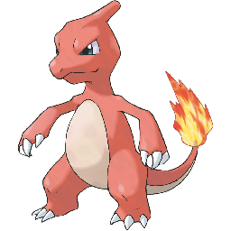
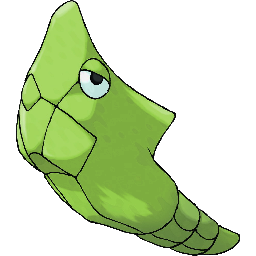

Grass / Poison
A strange seed was planted on its back at birth. The plant sprouts and grows with this POKéMON.

Grass / Poison
When the bulb on its back grows large, it appears to lose the ability to stand on its hind legs.

Grass / Poison
The plant blooms when it is absorbing solar energy. It stays on the move to seek sunlight.

Fire
Obviously prefers hot places. When it rains, steam is said to spout from the tip of its tail.

Fire
When it swings its burning tail, it elevates the temperature to unbearably high levels.

Fire / Flying
Spits fire that is hot enough to melt boulders. Known to cause forest fires unintentionally.

Water
After birth, its back swells and hardens into a shell. Powerfully sprays foam from its mouth.

Water
Often hides in water to stalk unwary prey. For swimming fast, it moves its ears to maintain balance.

Water
A brutal POKéMON with pressurized water jets on its shell. They are used for high speed tackles.

Bug
Its short feet are tipped with suction pads that enable it to tirelessly climb slopes and walls.

Bug
This POKéMON is vulnerable to attack while its shell is soft, exposing its weak and tender body.

Bug / Flying
In battle, it flaps its wings at high speed to release highly toxic dust into the air.

Bug / Poison
Often found in forests, eating leaves. It has a sharp venomous stinger on its head.

Bug / Poison
Almost incapable of moving, this POKéMON can only harden its shell to protect itself from predators.

Bug / Poison
Flies at high speed and attacks using its large venomous stingers on its forelegs and tail.

Normal / Flying
A common sight in forests and woods. It flaps its wings at ground level to kick up blinding sand.

Normal / Flying
Very protective of its sprawling territorial area, this POKéMON will fiercely peck at any intruder.

Normal / Flying
When hunting, it skims the surface of water at high speed to pick off unwary prey such as MAGIKARP.

Normal
Bites anything when it attacks. Small and very quick, it is a common sight in many places.

Normal
It uses its whiskers to maintain its balance. It apparently slows down if they are cut off.